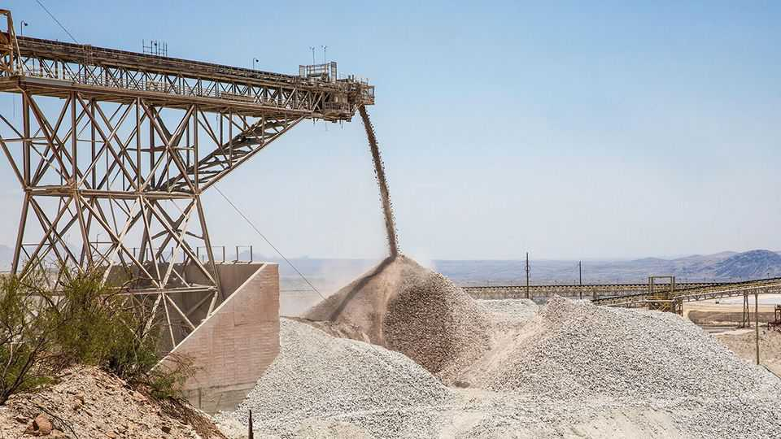
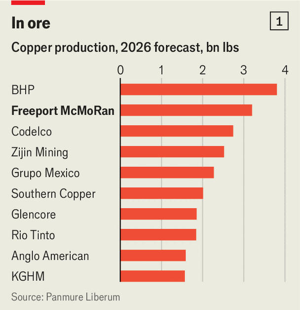
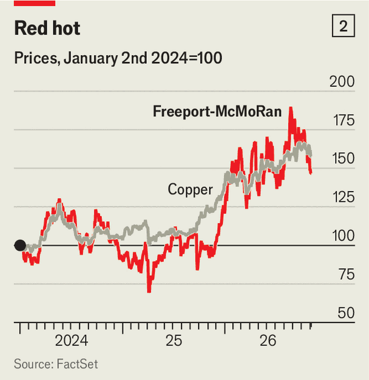

America’s copper giant has big dreams—but cautious plans
Freeport-McMoRan’s strategy hints at doubts that prices will continue to rise

Nov 5th 2026
Among the few areas of bipartisan consensus in Washington these days is the belief that securing access to critical minerals is vital to the national interest. In many cases Chinese miners have already established a daunting lead. But not in copper. That is thanks in no small part to Freeport-McMoRan, an American miner that is the world’s second biggest producer of the red metal, after BHP, a diversified Australian giant (see chart 1).
“Today really is Freeport’s time,” says Kathleen Quirk, chief executive of the Phoenix-based miner. Electrification and the artificial-intelligence boom will keep lifting copper demand, she argues, yet new supply is scarce and slow to develop. In the past 15 months copper prices have surged by 40%, bringing Freeport’s share price with them (see chart 2). That, combined with new technology and greater political support, leads Ms Quirk to suggest that America may be on the cusp of a copper version of the shale revolution. People once assumed that the country would remain dependent on imported oil and gas; instead it became a major exporter. Ms Quirk reckons her industry could see something similar.

One day, perhaps. But the strategy now being pursued by America’s copper giant will contribute only modestly. Last month Freeport said it was aiming to lift its total output of the metal to 4.5bn-5bn pounds by 2030, up from a projected 3bn in 2026. Its approach is strikingly incremental.
Freeport’s first priority is to restore output at its biggest mine—Grasberg, in Indonesia, which usually accounts for over 35% of its output (and is 51% owned by the Indonesian government). Since a giant mudslide in 2025 that killed seven workers, production there has been below par. Ms Quirk expects the site to have fully recovered by the end of 2027.
Next is to selectively expand existing sites. Most advanced is a plan to double the capacity of Bagdad, an 81-year-old mine in Arizona. On November 4th Freeport said its board had approved the $4.5bn investment, which Will Tankard of CRU, a consultancy, describes as “low risk”. Freeport says the project, which has all its permits, will break even at $4 a pound; copper trades near $6.40 today.

Bagdad’s doubling could add up to 250m pounds a year of copper supply by 2030. Freeport is also studying another mine expansion in Arizona, and seeking permits for one at El Abra in Chile, though neither will start before the next decade.
The final focus for Freeport is on new technology. At most of its mines it deposits ores that contain too little copper into giant stockpiles. These now hold about 40bn pounds of copper, says Ms Quirk.
To extract more from that ore, Freeport is experimenting with new forms of “leaching”, which uses acid to dissolve copper from rock. Last month the miner said it had tested a solution in the lab that may let it recover 800m pounds of copper a year from the stockpiles by 2030, up from a current annualised rate of 220m. Trials are planned in the field next year.
In 2025 Freeport has also converted Bagdad’s fleet to autonomous trucks. Ms Quirk says it plans to do the same elsewhere in America within the next few years to ease labour constraints, allowing it to produce more from existing mines. The company recently opened a centre in Phoenix to remotely perform dispatch work that used to be done on site.
For investors, however, Freeport has recently lost some of its lustre. From a peak in August, its share price has fallen by more than 20%. Partly that reflects disappointment over a downward revision to its projected sales and an upward revision to its capital expenditure over the near term. But it also points to discontent over the miner’s cautious approach.
Freeport has signalled little appetite for big acquisitions. Its strategy also lacks the “greenfield” projects that would be needed to vastly expand output—and turn America into a global copper power. That may reflect uncertainty over whether copper prices will continue to surge. A slowing global economy and the stagnation in China’s property market are weighing on demand. Tom Price of Panmure Liberum, a broker, reckons that this year’s price rally was caused mostly by hedge funds treating copper futures as a proxy for AI investment. If the data-centre binge comes to a halt, Freeport’s restraint will prove wise. ■